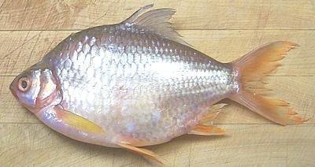

Tinfoil Barb

[Barbonymus altus (Red Tailed Tinfoil (photo)),
B. schwanenfeldii (Tinfoil Barb), Poropuntius malcolmi
(Goldfin Tinfoil)]
Found in the rivers of Southeast Asia these are very small carp. The
photo specimen (B. altus) is 10 inches and weighed 1 pound but most
are smaller, while B. schwanenfeldii (black edges on the tail) can
get 13 inches. The Goldfin doesn't tolerate aquaculture and is only sold
locally in Southeast Asia.
More on the Carp Family.
This is one of the most delicious fish I know. It has one problem -
it's a carp, so you have to deal with a number of branching spines in the
flesh. My favorite way of eating it is skin-on fillets dusted with rice
flour and fried in olive oil but it is very good steamed or baked whole
or as fillets.
DO NOT
cut this fish crosswise or cut scores through the
skin for any method of cooking. The spines are quite manageable full
length but if you cut them into pieces they are not. A fragment of spine
embedded in your throat is not particularly dangerous but it can be
uncomfortable.
Scales:
The scales are large, tough, deeply overlapping
and have strong adhesion making it fairly difficult to scrape them off.
You may have to pull some off with your long nose pliers.
Cleaning:
Cleaning is fairly easy. Though the body cavity
is large the innards pull out easily. The gills pull loose easily enough
but are hard to get at due to the very small gill slits. You can pull
them out with your pliers or you can poke them back into the main cavity
and remove them from there.
Fillet:
This fish fillets easily but the skirt area is
quite thin. I find more flesh is retained by cutting the ribcage from the
backbone and pulling the ribs from the fillet. They're very long so pull
them outwards rather than lengthwise as with most fish.
Skin:
Skinning this fish is a bit trickier than usual,
but the skin shrinks very moderately and doesn't have a strong flavor so
bits of it left on are not a problem - in fact the skin can be left on
entirely for many recipes.
Yield:
Yield is modest with a 1 pound fish yielding 6.1
ounce of skinless fillet (38%).
sf_tinfoilz* 061029 - www.clovegarden.com
©Andrew Grygus - agryg@clovegarden.com - Photos
on this page not otherwise credited © cg1
- Linking to and non-commercial use of this page permitted